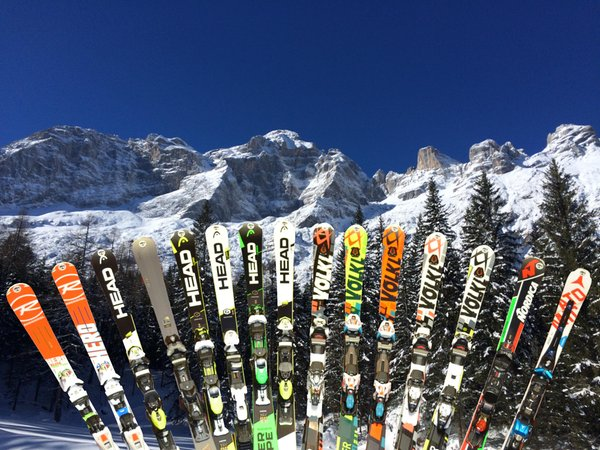
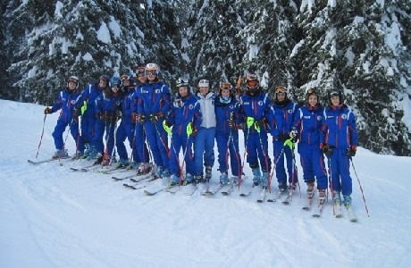

360 Gradi
Pranzare mentre si ammira un panorama mozzafiato?
E' possibile in cima al Monte Cristallo, in prossimità dell'impianto di risalita, grazie alla nostra terrazza dotata di pannelli di vetro che vi assicura un'ottima sosta per recuperare le forze e per rimanere al caldo almeno per un po'.
Il posto offre una tavola calda con ampia scelta di primi e secondi piatti originali del posto, tra una portata e l'altra potrete godervi la splendida vista dei monti innevati
Numero di telefono 398 0745612
Rifugio "Camposcuola"
Nell'area più frequentata delle nostre piste, ideale per una fermata in famiglia, si trova il nostro rifugio, il quale offre un buon menù, che si
adatta facilmente a tutti.
Durante la settimana è sempre disponibile un menù fisso a 15€ (primo + secondo) e uno a 10€ (solo primo o solo secondo); ricordiamo che in entrambi sono incluse le bevande.
Da quest'anno, ci sarà qualcosa di nuovo: una piccola parte sarà dedicata alla pizzeria, la quale prevede un menù fisso
a 15€ per pizza e bibita.
Numero di telefono: 321 6549870
Bar "Fast & go"
Per gli amanti di panini e birra, ai piedi delle piste, si trova questo bar che sicuramente soddisferà le vostre richieste: velocità nel servizio, ottima qualità e prezzo economico: calza a pennello per chi ha voglia di mangiare qualcosa al volo senza perdere troppo tempo.
Il menù varia dai panini classici con l’affettato (soppressa veneta, speck, prosciutto crudo e cotto e salame) ai più particolare e sfiziosi
con cotoletta, wurstel, hamburger e doppio strato hamburger con formaggio caldo e filante. Ovviamente non possono mancare ketchup , maionese e salsa barbecue .
Sei indeciso su che bibita abbinare al panino? Abbiamo a disposizione più di 10 birre diverse oltre alle classiche bibite, scegli la tua preferita!
Numero di telefono: 345 2514766

Vicino agli impianti di risalita principali e in prossimità dei parcheggi, si trovano i noleggi "Ski center" e "Noleggia con noi".
Le due strutture offrono un’ampia gamma di sci, snowboard , scarponi, racchette da neve, caschi e altri tipi di attrezzatura/protezioni che vi permetteranno di trascorrere in tutta sicurezza delle giornate stupende sulle piste.
Oltre al servizio di noleggio si può trovare un assortimento ricco di accessori sia per lo sci che per lo snowboard , un servizio per la manutenzione dei vostri sci/tavole (affilatura lamine e sciolinatura) e un comodo deposito dotato di armadietti, con serratura elettronica a codice, nei quali si potranno riporre effetti personali. Gli armadietti sono custoditi dal personale del noleggio.

Se vuoi metterti in gioco e imparare a sciare oppure vuoi solo migliorare, tenta con noi!
Abbiamo a disposizione più di 10 maestri, ognuno qualificato per seguire il tuo percorso. Hai la possibilità di richiedere lezioni private se vuoi imparare più velocemente, oppure se preferisci stare in compagnia, puoi condividere la tua esperienza con il gruppo che ti viene assegnato.
Il gruppo dei principianti è composto da 3/8 persone, quello intermedio da 4/10 persone, mentre quello degli esperti da 4/15 persone.
Offriamo corsi per sci alpino e snowboard per qualsiasi età. Affrettati a prenotare la tua lezione di prova!